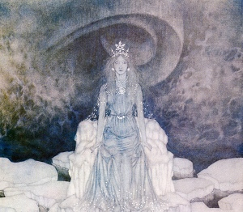

Sacred Texts Neopaganism
Buy this Book at Amazon.com
|

The Snow Queen, by Edmund Dulac [1911] (Public Domain Image) |
The Sorceress (La Sorcière)by Jules Michelettr. by Afred Richard Allinson[1939] |
But the greatest revolution the Sorceress brought about, the chief movement of all in contradiction, in direct contradiction to the spirit of the Middle Ages, is what we might well call a rehabilitation of the belly and its digestive functions. They boldly proclaimed the doctrine that "nothing is impure and nothing unclean." From that moment the study of physical science was enfranchised, its shackles loosed, and true medicine became a possibility.--p. 86This is a translation of Jules Michelet's La Sorcière, originally published in Paris in 1862. I have titled this text The Sorceress because that is a literal translation of the original French title. The original title of this translation was Satanism and Witchcraft, and it was later retitled Witchcraft, Sorcery and Superstition. However there is no need to sensationalize this book; the material is already sensational enough. And women are at the center of this book: peasant healers, aristocratic noblewomen, and nuns; we get an unparalleled look at the misery that medieval women faced, and some of the ways they rebelled.
Michelet was one of the first to attempt a sociological explanation of the Witch trials. Like his successor Margaret Murray, he interprets the source material very literally. Unlike Murray, he presents a proto-Marxist explanation for the phenomena; the witch cult as a primal rebellion against conventional society, one of many 'heretical' movements quashed by the Church. As time went on, the cult became institutionalized, which led to tacit toleration in some quarters. Michelet's portrayal of the lone sorceress as a pioneer of medicine and science is also memorable. Towards the end, a different kind of diabolical intervention is analyzed; the 'possession' of nuns in the 17th century, and how it was stage-managed by sadistic male clerics.
Michelet uses a style popular in the 19th century, of interspersing fictional but representative incidents in with the exposition. A more academic style would quote pages and pages of heavily footnoted and very repetitive accounts. By condensing these into an short story, Michelet makes the book infinitely more readable. If you want an academically cited study, you'll have to look elsewhere, but that doesn't prevent this book from being a classic study of the burning times.
Title Page
Contents
Introduction
Part One
1. Death of the Gods
2. What Drove the Middle Ages to Despair
3. The Little Demon of the Hearth and Home
4. Temptations
5. Diabolical Possession
6. The Pact With Satan
7. King of the Dead
8. Prince of Nature
9. Satan the Healer
10. Charms and Love Potions
11. Communion of Revolt—Witches’ Sabbaths—The Black Mass
12. Black Mass Continued—Love and Death—Satan Disappears
Part Two
13. The Sorceress in Her Decadence—Satan Multiplied and Vulgarised
14. Persecutions
15. A Hundred Years’ Toleration in France
16. The Basque Witches (1609)
17. Satan Turns Ecclesiastic (1610)
18. Gauffridi (1610)
19. The Nuns of Loudun—Urbain Grandier (1633, 1634)
20. The Nuns Of Louviers and Satanic Possession—Madeleine Bavent (1640-1647)
21. Satan Triumphant in the Seventeenth Century
22. Father Girard and Charlotte Cadière
23. Charlotte Cadière at the Convent of Ollioules
24. Trial of Charlotte Cadière (1730, 1731)
Epilogue
Notes and Elucidations
Principal Authorities